TreeviewCopyright © aleen42 all right reserved, powered by aleen42
2.1.5 碱基含量分布
碱基含量分布一般用于检测有无AT、GC分离现象。对于RNASeq来说，鉴于序列打断的随机性和G/C、A/T含量分别相等的原则，理论上每个测序循环中的GC含量相等、AT含量相等（如果是链特异性建库，可能会出现AT分离和/或GC分离），且在整个测序过程基本稳定不变，呈水平线。但在现有的高通量测序技术中，反转录合成 cDNA 时所用的6bp的随机引物会引起前几个位置的核苷酸组成存在一定的偏好性，这种波动属于正常情况。碱基含量分布结果见图
质控和过滤前碱基含量分布图：
G42H-1
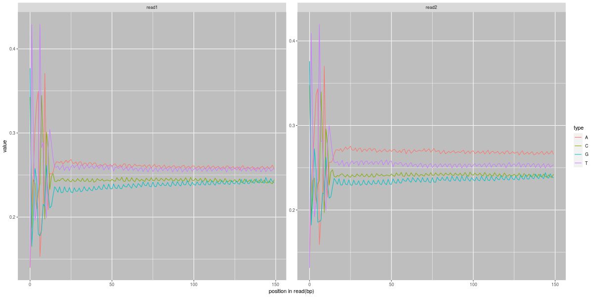注：横坐标是Reads中碱基位置（5'->3'），横坐标是该位点某碱基含量G42H-2
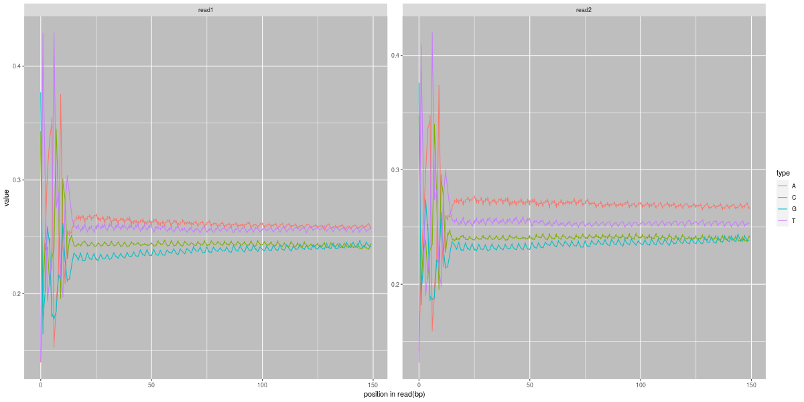注：横坐标是Reads中碱基位置（5'->3'），横坐标是该位点某碱基含量G42H-3
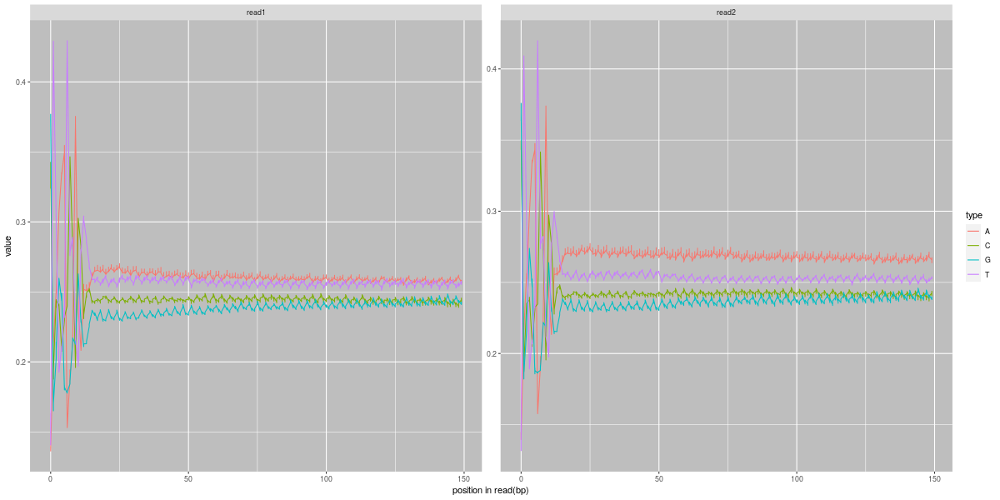注：横坐标是Reads中碱基位置（5'->3'），横坐标是该位点某碱基含量G42L-1
注：横坐标是Reads中碱基位置（5'->3'），横坐标是该位点某碱基含量G42L-2
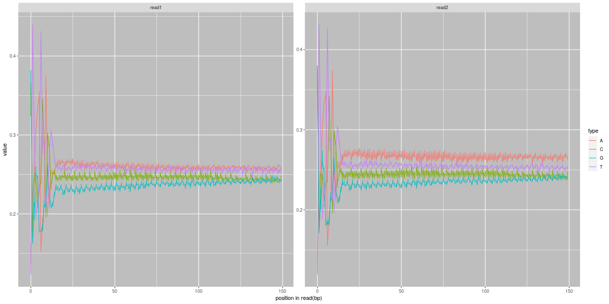注：横坐标是Reads中碱基位置（5'->3'），横坐标是该位点某碱基含量G42L-3
注：横坐标是Reads中碱基位置（5'->3'），横坐标是该位点某碱基含量G63H-1
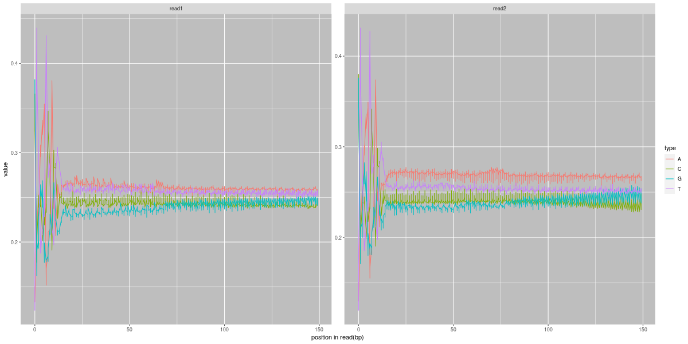注：横坐标是Reads中碱基位置（5'->3'），横坐标是该位点某碱基含量G63H-2
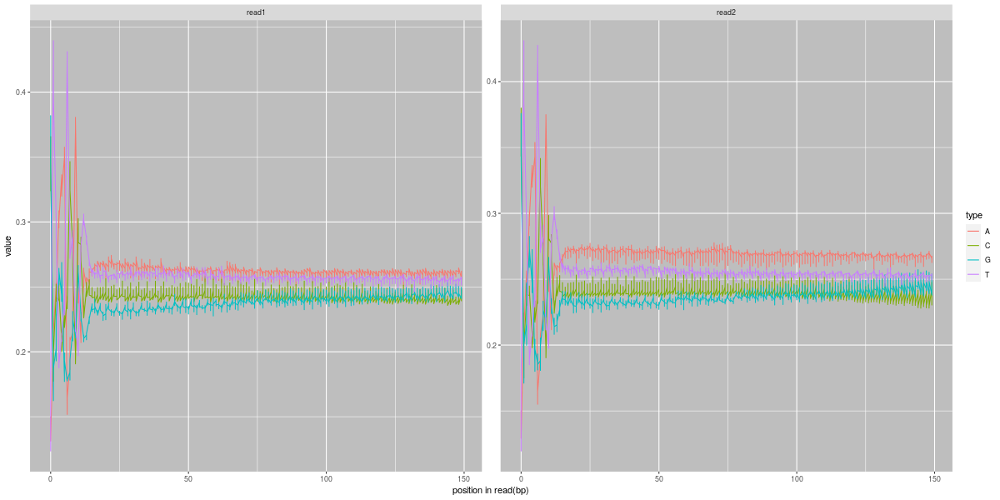注：横坐标是Reads中碱基位置（5'->3'），横坐标是该位点某碱基含量G63H-3
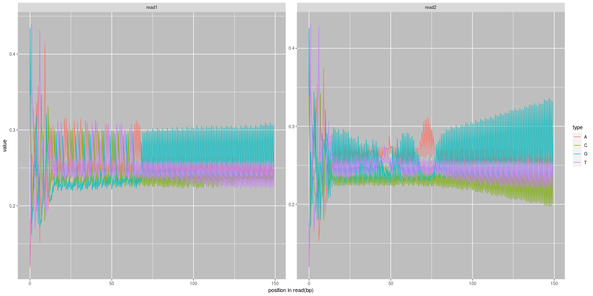注：横坐标是Reads中碱基位置（5'->3'），横坐标是该位点某碱基含量G63L-1
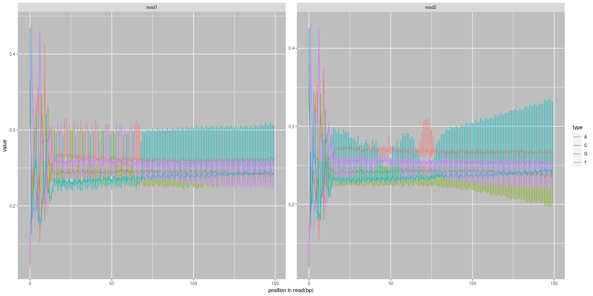注：横坐标是Reads中碱基位置（5'->3'），横坐标是该位点某碱基含量质控和过滤后碱基含量分布图：
G42H-1
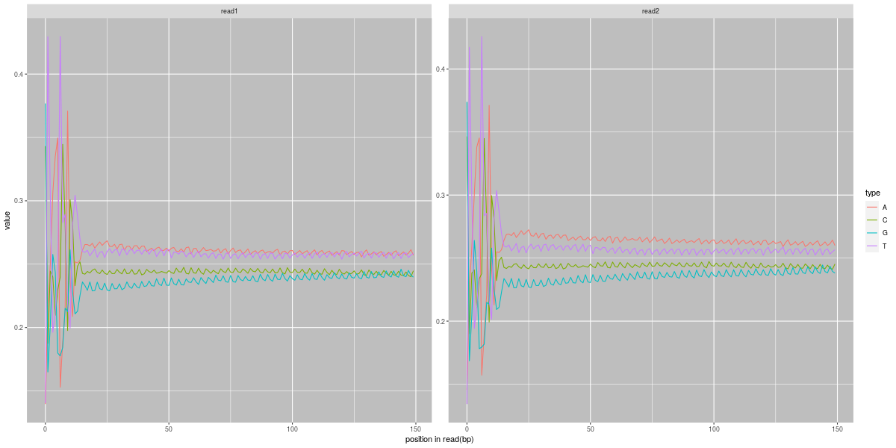注：横坐标是Reads中碱基位置（5'->3'），横坐标是该位点某碱基含量G42H-2
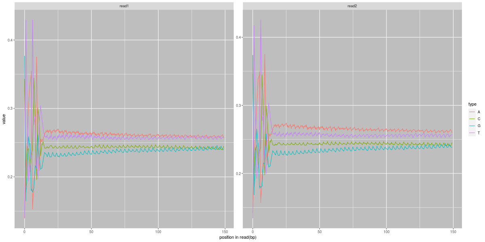注：横坐标是Reads中碱基位置（5'->3'），横坐标是该位点某碱基含量G42H-3
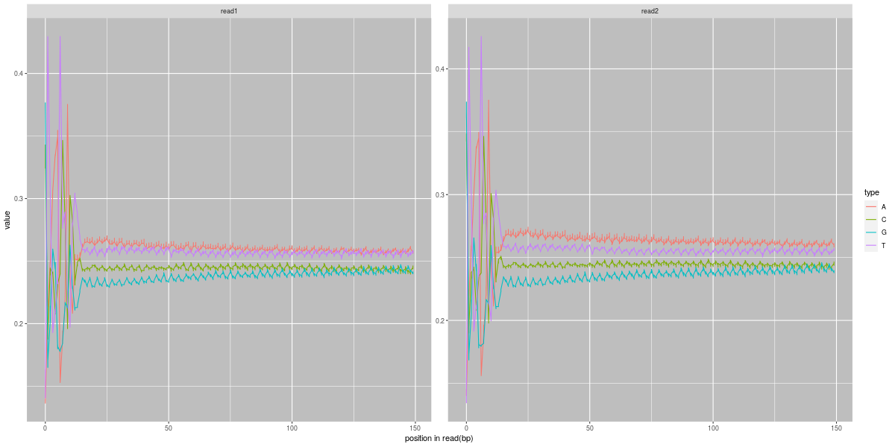注：横坐标是Reads中碱基位置（5'->3'），横坐标是该位点某碱基含量G42L-1
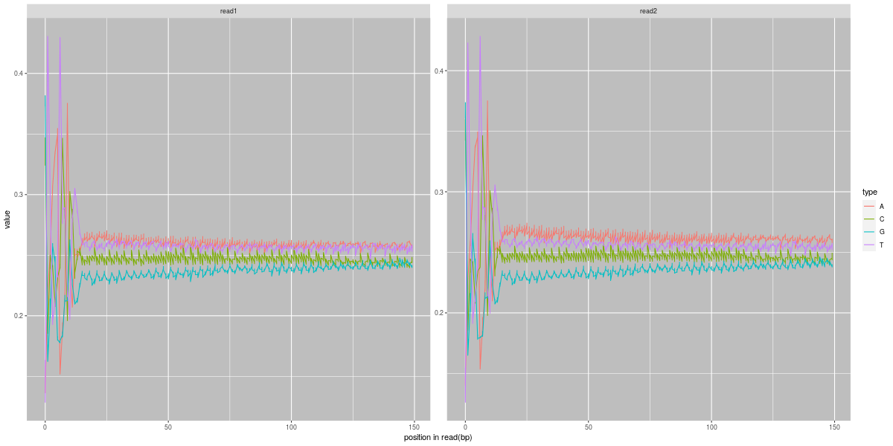注：横坐标是Reads中碱基位置（5'->3'），横坐标是该位点某碱基含量G42L-2
注：横坐标是Reads中碱基位置（5'->3'），横坐标是该位点某碱基含量G42L-3
注：横坐标是Reads中碱基位置（5'->3'），横坐标是该位点某碱基含量G63H-1
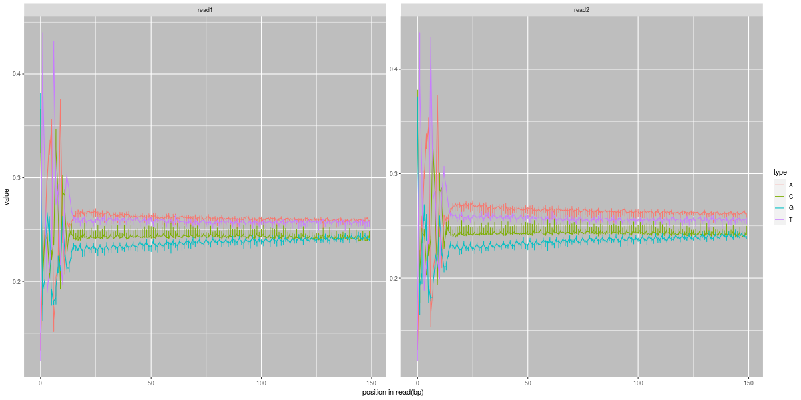注：横坐标是Reads中碱基位置（5'->3'），横坐标是该位点某碱基含量G63H-2
注：横坐标是Reads中碱基位置（5'->3'），横坐标是该位点某碱基含量G63H-3
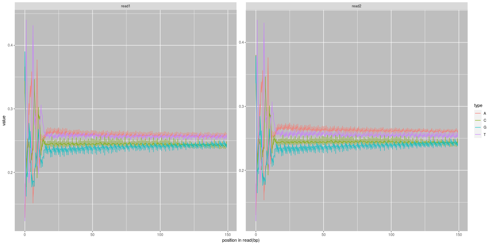注：横坐标是Reads中碱基位置（5'->3'），横坐标是该位点某碱基含量G63L-1
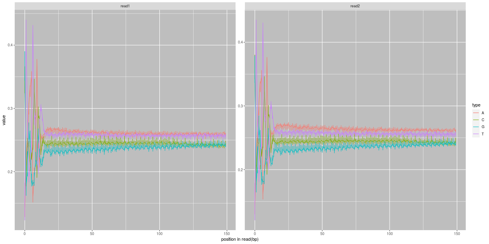注：横坐标是Reads中碱基位置（5'->3'），横坐标是该位点某碱基含量G63L-2
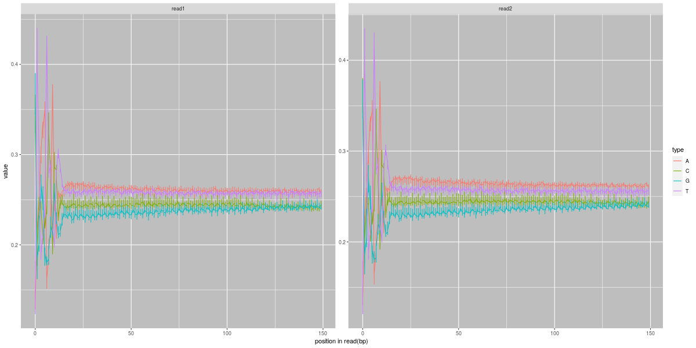注：横坐标是Reads中碱基位置（5'->3'），横坐标是该位点某碱基含量